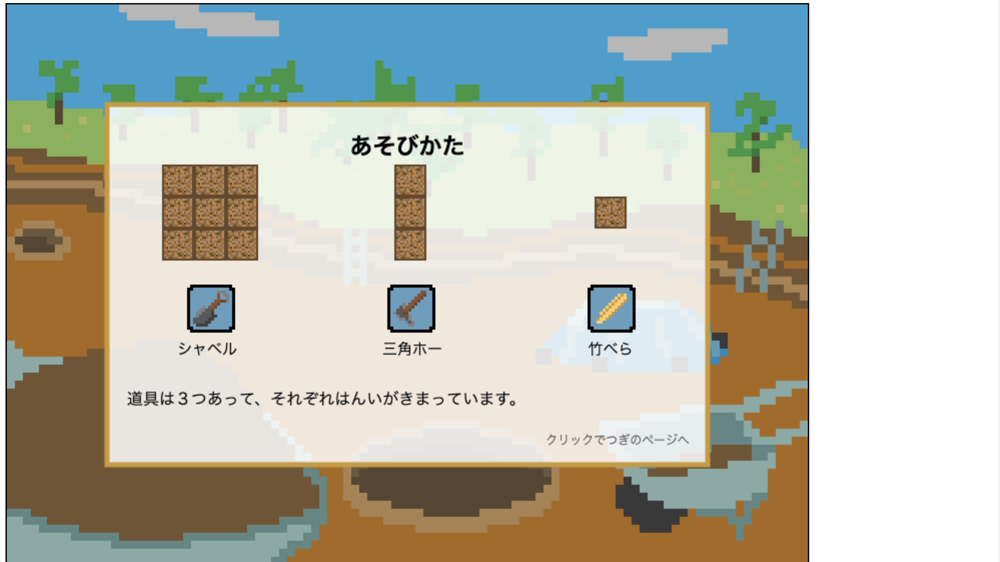
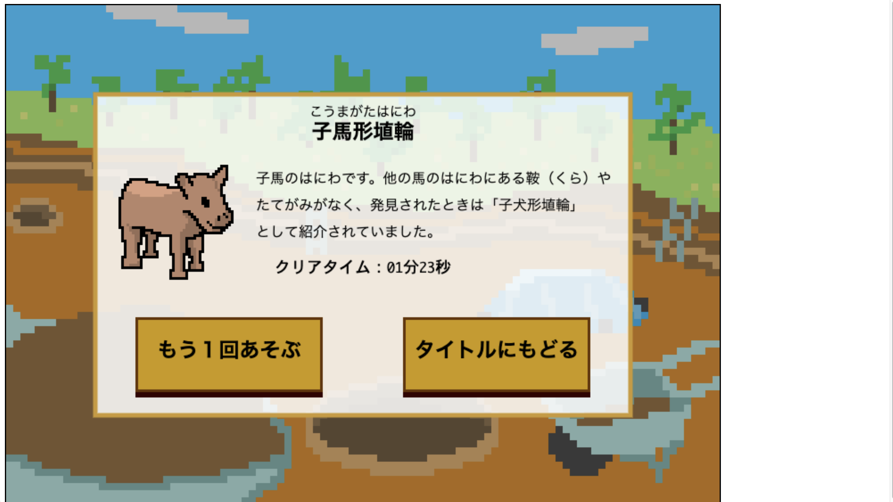
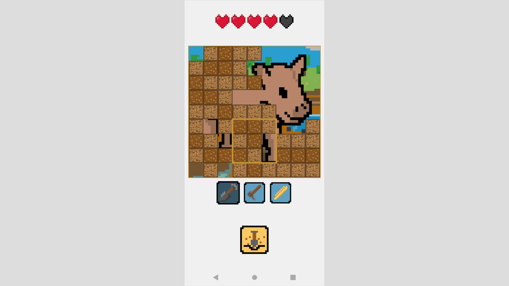

はっくつゲーム
「はっくつゲーム」をプレイ
https://lota-136.github.io/HakkutuGame/

大阪府四條畷市の埋蔵文化財をテーマにしたパズルゲームです。３種類の道具を使い分けて盤面の土を除去します。

クリアすると文化財の解説とイラストを見ることができます。対象のユーザーを考え、漢字を崩す、ふりがなをつけるなど工夫しています。

PCとスマートフォンでプレイでき、それぞれに個別の操作方法を持たせて快適なゲームプレイができるようにしました。
リストに戻る